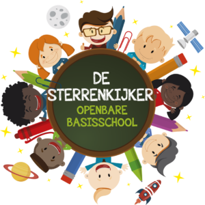
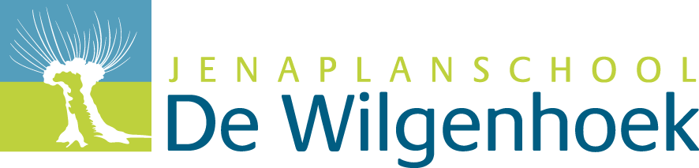
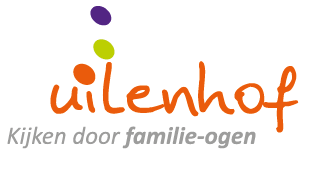
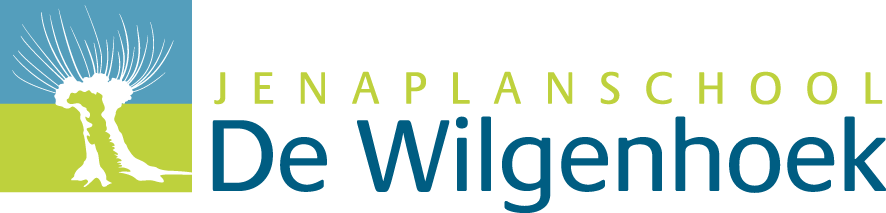
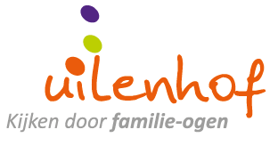

De verrenkijker in Kedichem heet nu De sterrenkijker (ik heb de tijd van De sterrenkijker nooit meegemaakt) het is een basisschool waar ik heb opgezeten. Ik ben daar na groep 5 weggegaan want ik werd daar heel erg gepest. Toen ik weging ging ik naar de Wilgenhoek in Leerdam.
De Wilgenhoek is de basisschool waar ik na groep 5 op zat. Ik had het hier meer naar me zin dan op De Verrenkijker (De Sterrenkijker) in Kedichem.
Ik vond het op de Uilenhof in Gorinchem leuk maar ik vind het op het Da Vinci leuker. Dat komt doordat ik op het Da Vinci het meeste programeer en op het Uilenhof niet. Ook moet ik op de uilenhof in boeken werken dat vind ik minder leuk dan op de laptop.
Ik zit nu op het Da Vinci in Gorinchem waar ik het erg naar mijn zin heb. Ik vind het programeren leuk en heb leuke medestudenten en docenten.
 


